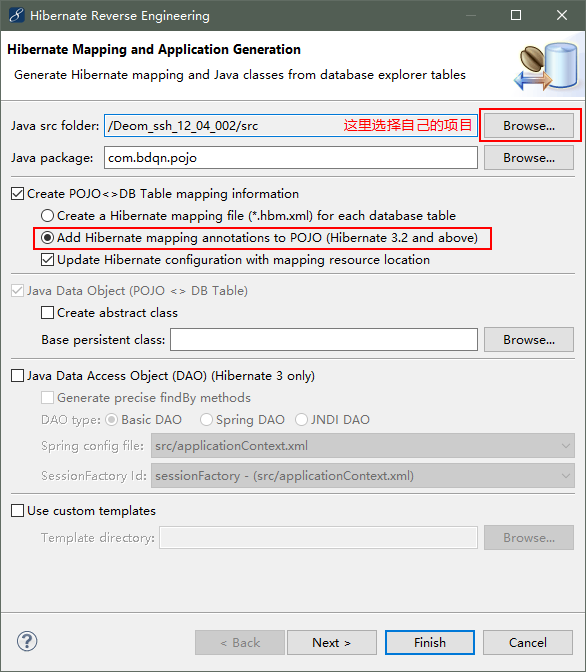

环境：oracle11g、myeclipse2014
首先在web项目中添加spring框架
现在已经添加完spring框架了
然后我们开始添加Hibernate框架
到这一步Hibernate框架就添加完成了
applicationContext.xml配置文件
<?xml version="1.0" encoding="UTF-8"?>
<beans xmlns="http://www.springframework.org/schema/beans"
xmlns:xsi="http://www.w3.org/2001/XMLSchema-instance" xmlns:p="http://www.springframework.org/schema/p"
xmlns:context="http://www.springframework.org/schema/context" xmlns:tx="http://www.springframework.org/schema/tx"
xsi:schemaLocation="http://www.springframework.org/schema/beans http://www.springframework.org/schema/beans/spring-beans-3.1.xsd
http://www.springframework.org/schema/tx http://www.springframework.org/schema/tx/spring-tx-3.1.xsd
http://www.springframework.org/schema/context http://www.springframework.org/schema/context/spring-context-3.1.xsd">
<bean id="dataSource" class="org.apache.commons.dbcp.BasicDataSource">
<property name="url" value="jdbc:oracle:thin:@127.0.0.1:1521:orcl">
</property>
<property name="username" value="system"></property>
<property name="password" value="1234"></property>
<property name="driverClassName" value="oracle.jdbc.driver.OracleDriver"></property>
</bean>
<bean id="sessionFactory"
class="org.springframework.orm.hibernate3.annotation.AnnotationSessionFactoryBean">
<property name="dataSource">
<ref bean="dataSource" />
</property>
<property name="hibernateProperties">
<props>
<prop key="hibernate.dialect">
org.hibernate.dialect.Oracle9Dialect
</prop>
<prop key="hibernate.show_sql">true</prop>
<prop key="hibernate.format_sql">true</prop>
</props>
</property>
<!-- <property name="annotatedClasses"> <list> <value>com.bdqn.pojo.Dept</value>
<value>com.bdqn.pojo.Emp</value> </list> </property> -->
<property name="packagesToScan" value="com.bdqn.pojo"></property>
</bean>
<context:component-scan base-package="com.bdqn" />
<bean id="txManager"
class="org.springframework.orm.hibernate3.HibernateTransactionManager">
<property name="sessionFactory" ref="sessionFactory"></property>
</bean>
<tx:annotation-driven transaction-manager="txManager" />
</beans>然后开始配置struts2框架
到现在struts2框架也整合进来了
然后使用Hibernate的反向工程创建实体类

点击finish，然后实体类就创建好了，接下来就可以开始写代码了
dao层接口
package com.bdqn.dao;
import java.util.List;
import com.bdqn.pojo.Emp;
public interface EmpDao {
public List<Emp> findAll();
}dao层实现
package com.bdqn.dao.impl;
import java.util.List;
import org.hibernate.SessionFactory;
import org.springframework.beans.factory.annotation.Autowired;
import org.springframework.beans.factory.annotation.Qualifier;
import org.springframework.orm.hibernate3.support.HibernateDaoSupport;
import org.springframework.stereotype.Repository;
import com.bdqn.dao.EmpDao;
import com.bdqn.pojo.Emp;
@Repository("empDao")
public class EmpDaoImpl extends HibernateDaoSupport implements EmpDao {
@Autowired
public EmpDaoImpl(@Qualifier("sessionFactory") SessionFactory sessionFactory) {
this.setSessionFactory(sessionFactory);
}
public EmpDaoImpl() {
}
@Override
public List<Emp> findAll() {
// TODO Auto-generated method stub
return this.getHibernateTemplate().find("from Emp");
}
}service层接口
package com.bdqn.service;
import java.util.List;
import com.bdqn.pojo.Emp;
public interface EmpService {
public List<Emp> findAll();
}service层实现
package com.bdqn.service.impl;
import java.util.List;
import org.springframework.beans.factory.annotation.Autowired;
import org.springframework.stereotype.Service;
import org.springframework.transaction.annotation.Transactional;
import com.bdqn.dao.EmpDao;
import com.bdqn.pojo.Emp;
import com.bdqn.service.EmpService;
@Service("empService")
@Transactional
public class EmpServiceImpl implements EmpService {
@Autowired
private EmpDao empDao;
public EmpDao getEmpDao() {
return empDao;
}
public void setEmpDao(EmpDao empDao) {
this.empDao = empDao;
}
@Override
@Transactional(readOnly = true)
public List<Emp> findAll() {
// TODO Auto-generated method stub
return empDao.findAll();
}
}Action（web）：
package com.bdqn.web;
import java.util.List;
import java.util.Map;
import org.springframework.beans.factory.annotation.Autowired;
import org.springframework.stereotype.Controller;
import com.bdqn.pojo.Emp;
import com.bdqn.service.EmpService;
import com.opensymphony.xwork2.ActionContext;
import com.opensymphony.xwork2.ActionSupport;
@Controller
public class EmpAction extends ActionSupport {
@Autowired
private EmpService empService;
public EmpService getEmpService() {
return empService;
}
public void setEmpService(EmpService empService) {
this.empService = empService;
}
public String execute(){
Map<String, Object> request = (Map<String, Object>) ActionContext.getContext().get("request");
List<Emp> emps = empService.findAll();
request.put("emps", emps);
return SUCCESS;
}
}struts.xml配置文件
<?xml version="1.0" encoding="UTF-8" ?>
<!DOCTYPE struts PUBLIC "-//Apache Software Foundation//DTD Struts Configuration 2.1//EN" "http://struts.apache.org/dtds/struts-2.1.dtd">
<struts>
<package name="def" namespace="/" extends="struts-default">
<action name="empAction" class="com.bdqn.web.EmpAction">
<result>/index.jsp</result>
</action>
</package>
</struts> jsp页面：
<%@ page language="java" import="java.util.*" pageEncoding="UTF-8"%>
<%@ taglib uri="http://java.sun.com/jsp/jstl/core" prefix="c" %>
<%
String path = request.getContextPath();
String basePath = request.getScheme()+"://"+request.getServerName()+":"+request.getServerPort()+path+"/";
%>
<!DOCTYPE HTML PUBLIC "-//W3C//DTD HTML 4.01 Transitional//EN">
<html>
<head>
<base href="<%=basePath%>">
<title>My JSP 'index.jsp' starting page</title>
<meta http-equiv="pragma" content="no-cache">
<meta http-equiv="cache-control" content="no-cache">
<meta http-equiv="expires" content="0">
<meta http-equiv="keywords" content="keyword1,keyword2,keyword3">
<meta http-equiv="description" content="This is my page">
<!--
<link rel="stylesheet" type="text/css" href="styles.css">
-->
</head>
<body>
<c:forEach items="${emps}" var="emp">
${emp.ename }<br/>
</c:forEach>
</body>
</html>到这一步恭喜，你的ssh项目搭建完了
然后部署项目发布
在浏览器上输入http://localhost:8080/你的项目命/empAction.action就可以访问项目了